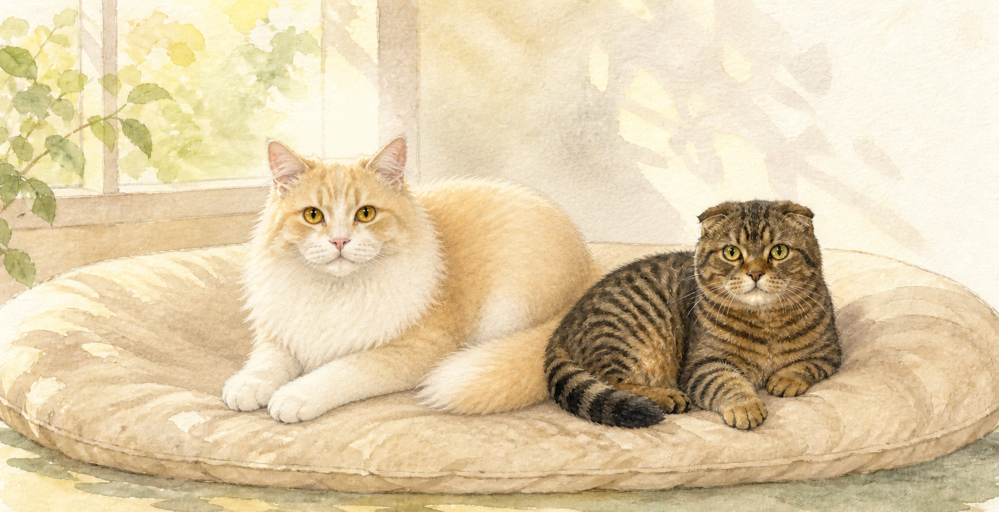
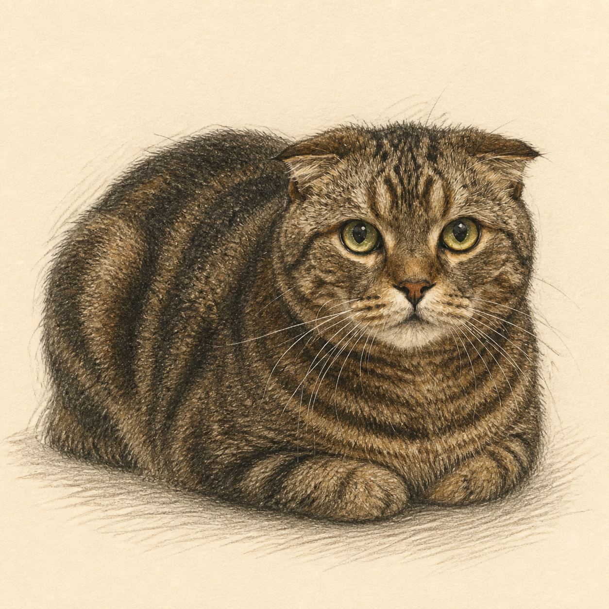
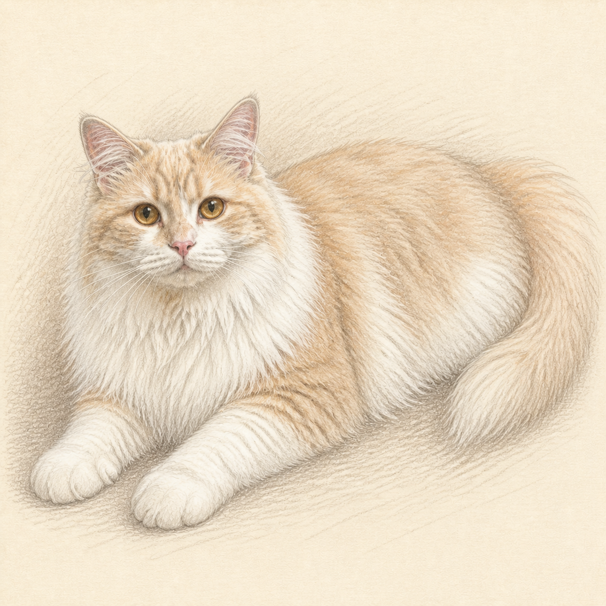
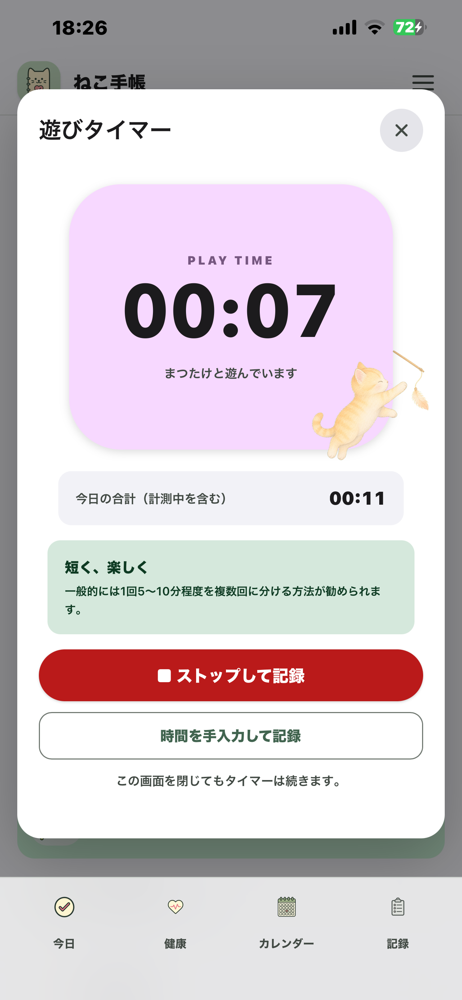
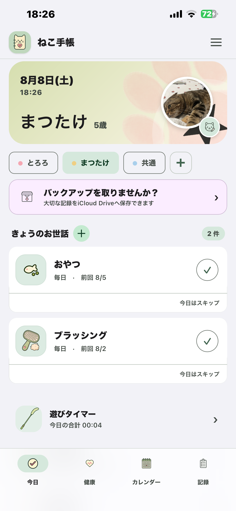
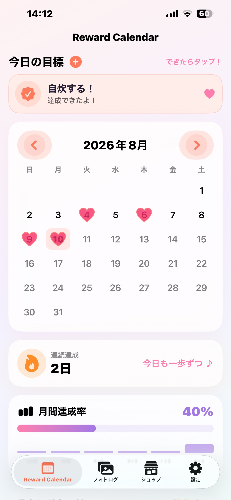
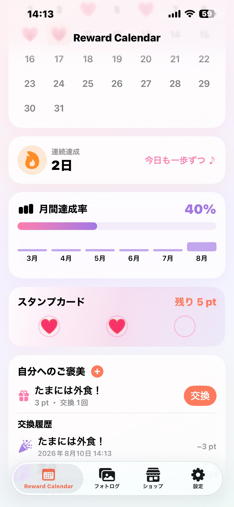
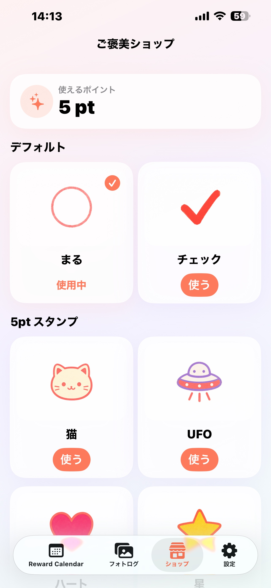
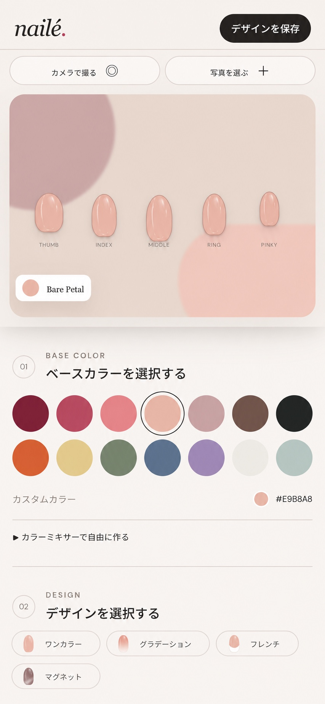
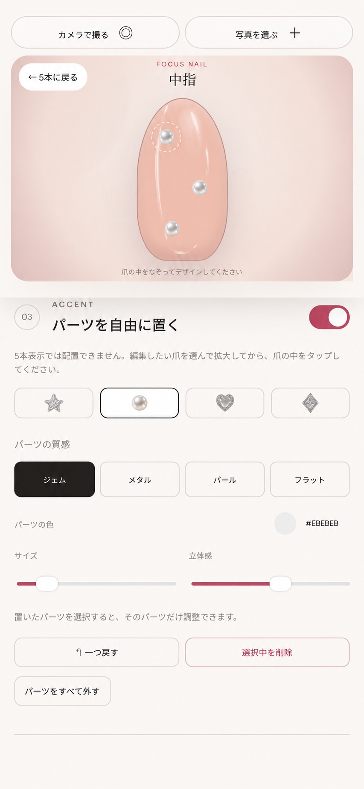

01
SAP Basis・システム運用
基幹業務システム領域のITエンジニアとして約5年勤務。SAP Basisの運用にも携わり、企業の業務を支えるシステムを扱ってきました。
IT ENGINEERING
PROFILE
基幹業務システムのITエンジニアとして約5年、開発や運用に携わりました。その後は人事・採用へ移り、スタートアップから大手コンサルティングファームまで、幅広い企業の採用を支援してきました。
現在はProgateでタレントコンシェルジュとして、学習者の方々をサポートしています。個人でも、日々の生活で「こういうものが欲しい」と思ったことをきっかけに、iPhoneアプリやWebアプリをつくっています。
EXPERIENCE
01
基幹業務システム領域のITエンジニアとして約5年勤務。SAP Basisの運用にも携わり、企業の業務を支えるシステムを扱ってきました。
IT ENGINEERING02
人事・採用担当として、新卒採用を経験。採用する企業と、仕事を探す人の両方に向き合ってきました。
RECRUITING03
スタートアップから大手コンサルティングファームまで、さまざまな企業の中途採用を支援してきました。
RECRUITING04
現在はProgateのタレントコンシェルジュとして、学習を続ける方々をサポートしています。
LEARNER SUPPORTCATS

毎朝4時ごろに起こしにくる、優しい性格。

作業中にキーボードの上に座りに来るくらい甘えん坊。
WORKS


二匹との暮らしをきっかけにつくった、猫ごとのお世話と健康をまとめて残せる記録アプリです。



小さな目標の達成をスタンプで記録し、ポイントと自分へのご褒美につなげる習慣化アプリです。


色・質感・アート・パーツを組み合わせ、手元写真でも仕上がりを試せるネイルデザインアプリです。
画面内をタップして操作できます。保存はされません。